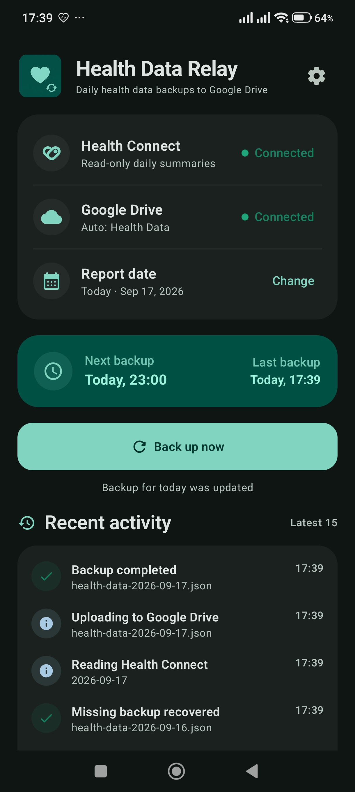
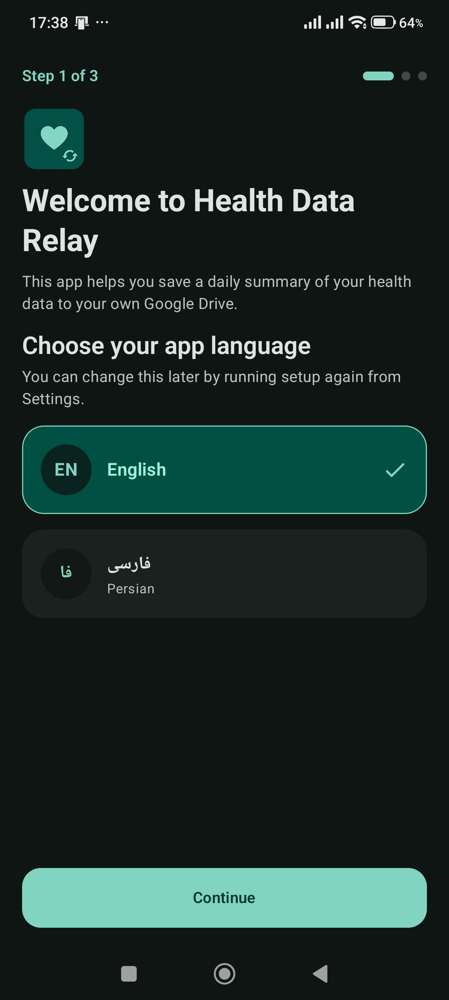
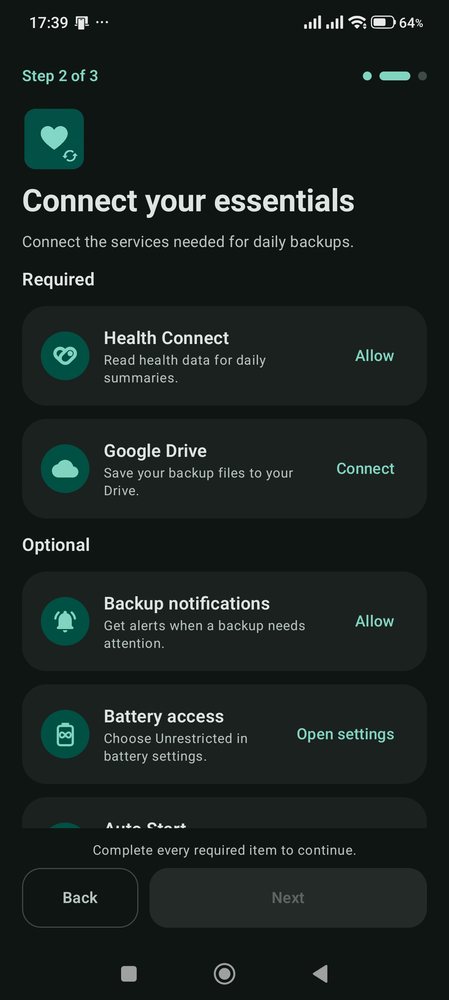
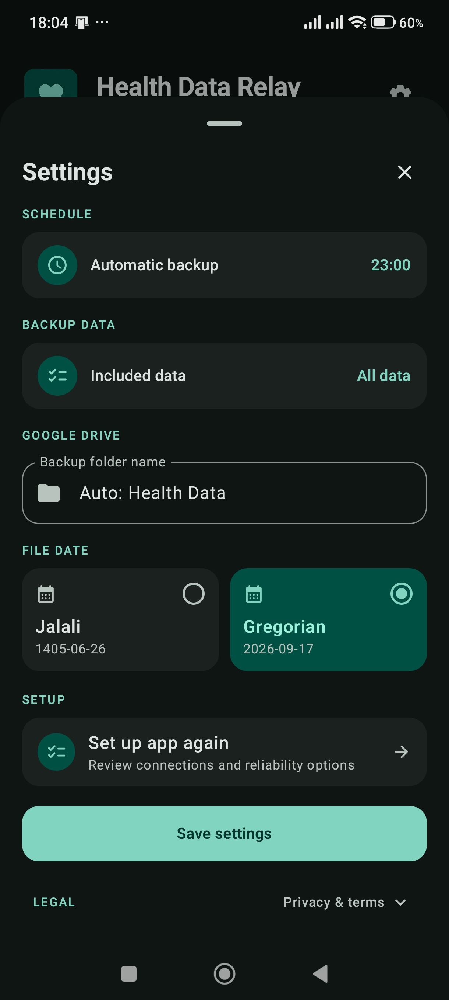
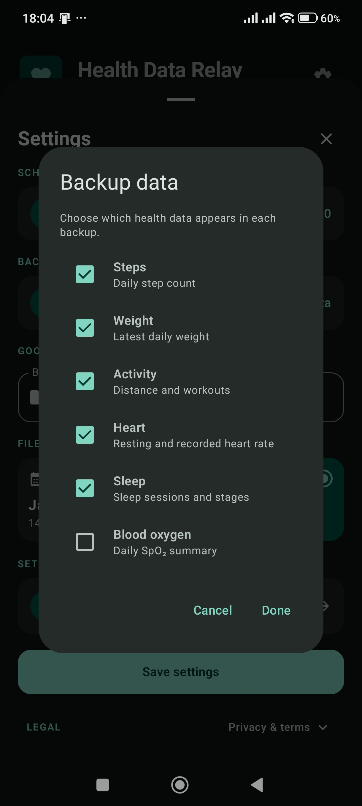
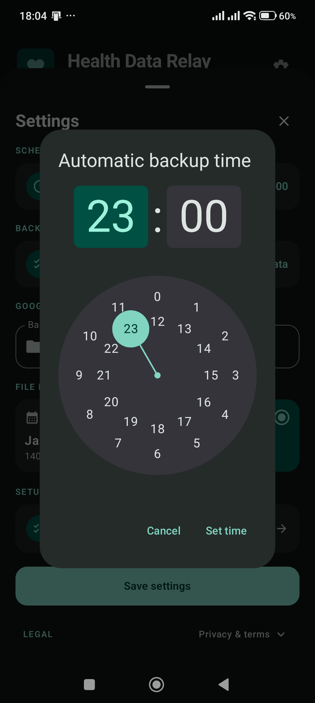

Read from Health Connect
Read the Health Connect categories you approve, including steps, activity, heart, sleep, blood oxygen, and weight.
Your personal health data pipeline
Health Data Relay creates a direct pipeline from Health Connect to your Google Drive: choose English or Persian, select the data you need, and keep compact daily JSON backups running on your schedule.

One clear purpose
Compatible apps can keep writing health and fitness data to Health Connect. Health Data Relay handles the next step: collecting a daily summary and placing it in your Drive.
Read the Health Connect categories you approve, including steps, activity, heart, sleep, blood oxygen, and weight.
Turn each day into one compact, readable file. Choose Gregorian or Jalali filenames while keeping every filename in Latin digits.
Upload or update the daily file directly in your Google Drive. Automatic scheduling, retries, and recent-day recovery keep the process dependable.
Inside the app
Choose a language, connect the required services, and tailor the schedule, data categories, and file dates to your workflow.





Useful after the backup
Because the output is ordinary JSON in your Drive, you can use it later with tools you choose and authorize:
Health Data Relay does not connect to those tools itself. It simply creates the files so your own workflows can use them.
{
"date": "1405-06-02",
"dateGregorian": "2026-08-24",
"steps": 8432,
"weight": 79.5,
"activity": {
"exerciseMinutes": 52,
"distanceKm": 5.4,
"workouts": [
{ "type": "walking", "durationMinutes": 47 }
]
},
"heart": {
"resting": 52,
"average": 81,
"min": 46,
"max": 138
},
"sleep": {
"bedTime": "00:18",
"wakeTime": "07:56",
"totalMinutes": 458,
"deepMinutes": 94,
"remMinutes": 87
},
"spo2": {
"average": 97.6,
"min": 95.0
}
}Available now
Choose your preferred source.
No server in the middle
The summary is created on your Android device and uploaded directly to your Google Drive using the limited drive.file permission. Health Data Relay has no developer-operated backend or cloud database and never receives a copy of your health data.
See exactly how data is handled{kind=link}
{kind=link}
{kind=link}
{kind=link}
{kind=link}
{kind=link}